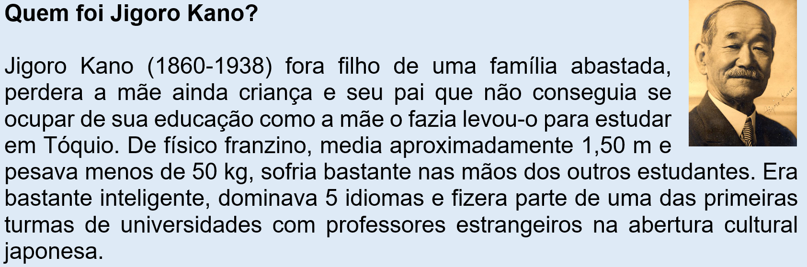

Capítulo 6: Judogui - O Vestuário do Judô
Na sociedade atual, onde a violência desponta diariamente nos noticiários, pode parecer antagônico pensar sobre a prática de lutas em aulas de educação física. Você talvez tenha pensado exatamente o mesmo. Porém, uma visão mais ampla desse contexto provará que a vivência de lutas no contexto da educação física pode ter um efeito totalmente oposto à violência. A luta esportiva ou cultural está enraizada nas tradições de diferentes povos e tem um forte apelo a disciplina e formação do caráter do praticante.
A cada edição dos jogos olímpicos ouvimos o jargão que o Brasil é também o país do judô. Desde os Jogos de Los Angeles em 1984 a modalidade sempre traz medalhas e o número de praticantes do esporte é muito grande, principalmente entre as crianças. Esse grande número de participantes movimenta alguns interessantes mercados como o da confecção de quimonos, o quimono específico para a prática do judô é conhecido pelo nome de judogui.
O mercado de vestuário esportivo vai desde artigos para uso em atividades físicas, academias, adeptos de corridas de rua, vendas de material de clubes de futebol, até equipamentos mais específicos como para o uso pessoal como de natação, ciclismo ou judô, por exemplo. As grandes marcas multinacionais dominam esses ramos do vestuário esportivo limitando bastante o surgimento de novas marcas. Entretanto, isso não impede que confecções locais se especializem e assumam a produção em pequena escala de vestuários para práticas esportivas bem delimitadas, principalmente no caso de atletas amadores.
Você saberia qual é o material que compõe um judogui?
Importância das lutas
Quando entendemos falar sobre lutas nas aulas de educação física logo pensamos nas artes marciais, filmes de ação ou eventos midiáticos. Só que a abordagem das lutas nas aulas de educação física vai muito além disso, experiências como jogos de confronto físico são outro interessante aspecto que podemos citar, quedas de braço, briga do dedão, cabo de guerra são excelentes maneiras de treinar força.
Quem já ouviu falar da luta do saci, onde os oponentes ficam apoiados em uma perna e tentam desequilibrar seu adversário? Podemos ir além disso, permitindo espaço para lutas tribais ou culturais, como é o caso de jogos indígenas ou da própria capoeira, elementos ricos de nossa cultura.
Quando combinamos exercícios que exigem múltiplas capacidades físicas oferecemos aos alunos diferentes formas de explorar suas limitações, colocar-se a prova, lidar com medos e frustrações, e se bem administrado crescer com esses desafios. As lutas exigem capacidades físicas como a elasticidade, força, equilíbrio, concentração, paciência, etc. Sendo muito uteis no controle da agressividade.
As lutas tendem a agradar os alunos de educação física. Podem servir como excelente instrumento pedagógico, pois lutar faz parte do processo evolutivo e da sobrevivência da humanidade como espécie através dos tempos. Citamos o exemplo do judô, que vem sendo considerado um dos esportes mais indicados pela própria Unesco para crianças e jovens devido não apenas as habilidades que desenvolve, mais igualmente pelos valores que cultiva em seus praticantes.
Outro aspecto que pode ser destacado é o importante espaço que o judô oferece para pessoas fragilizadas socialmente ou portadores de necessidades especiais. O judô é a única modalidade de luta disponível no programa paralímpico, judô para deficientes visuais. Entretanto, alunos com Síndrome de Down e outra limitações são cada vez mais frequentes e acabam promovendo a criação de associações e organização de eventos esportivos específicos.
O judô
No Japão Feudal existiam diferentes formas de lutas, estilos identificados com localidades e vilarejos, essas lutas eram conhecidas pelo nome Ju-Jutsu. Com a chegada das armas de fogo e a captura dos portos japoneses por americanos e ingleses as tradicionais castas de samurais foram consideradas resquícios de um período de barbárie e proibidas. As escolas de Ju-Jutsu seguiam existindo, mas sem o mesmo destaque de antes, portar espadas era proibido e a cultura samurai aos poucos desaparecia.
Jigoro Kano com 22 anos, no ano de 1882, após ter estudado em diferentes escolas de Ju-Jutsu, conclui que a cultura japonesa não era fruto da barbárie e que atualizada poderia contribuir para a formação social. Conseguindo emprestado um espaço em um templo budista Jigoro Kano inicia com 8 alunos seu legado, denominando seu método de Judô, traduzido significaria “Caminho Suave” em uma alusão a formação de um indivíduo gentil e disposto a contribuir para a sociedade.
Rapidamente, através de demonstrações o Judô foi crescendo, os antigos mestres de Ju-Jutsu aderiram a nova formatação, que preservava os valores samurais, mas possuía um foco de formação do caráter e social muito mais destacado. Jigoro Kano funda a Kodokan, escola para ensinar o caminho, expandindo o alcance do judô. Demonstrações da eficiência de seu método davam notoriedade a nova arte marcial, mas principalmente a sua nova obra de educação que relançava os valores e a cultura do país.
Desafiado por mestres de Ju-Jutsu, organizavam-se desafios, como por exemplo, quando a polícia japonesa desejava escolher qual luta seria adotada na formação de seus oficiais. Em dez confrontos o judô vencera 9 lutas e empatara 1, sendo desde então adotado pela polícia japonesa. Já na transição dos séculos XIX e século XX a Kodokan passa a enviar representantes mundo afora para divulgar o judô além das fronteiras japonesas. Nessa época o judô chega a ser praticado pelo presidente dos Estados Unidos em um espaço montado dentro da própria Casa Branca.
No Brasil, Conde Koma chega para divulgar o método de Jigoro Kano e faz inúmeras apresentações, inclusive para o exército brasileiro. Entre os principais discípulos de Conde Koma encontrava-se membros da família Gracie, que iriam adaptar técnicas e regras, dando origem ao Jiu Jitsu, arte irmã do Judô. Com a chegada dos imigrantes japoneses ao Brasil nas décadas de 1910 – 1920, o Judô recebe uma propulsão gigantesca influenciando o estabelecimento do esporte em terras brasileiras. O Brasil possui o maior número de japoneses fora do Japão, 2 milhões de imigrantes, trouxeram cultura e tradições de seu país na bagagem, sendo o judô uma dessas heranças.
Em 1938 o Comitê Olímpico Internacional aprovou o ingresso do Judô no programa olímpico, mas devido a 2ª Guerra Mundial essa estreia fora adiada para as Olimpíadas de Tóquio em 1964. Em Barcelona 1992 o Judô passou a ser disputado também pelas mulheres. Desde então o Brasil se colocou entre uma das principais potências da modalidade. Sendo a modalidade olímpica que mais trouxe medalhas para o Brasil, levando ao jargão “Brasil, país do judô”.
Respeito e cidadania
Em um ambiente escolar nem sempre existem as melhores condições para a prática de lutas, as vezes faltam meios, em outros momentos falta conhecimento para o professor colocar uma aula de lutas em prática. Quando se imagina uma aula de educação física que contemple modalidades de lutas logo vem à mente as imagens que vemos na televisão, principalmente de competições, porém, existem outras formas de fazê-lo.
Especificamente no caso do judô deve-se priorizar exercícios de queda, conhecidos por ukemis, que podem ser executados em diferentes posições e são facilmente encontrados em vídeos na internet, incluindo ainda rolamentos. Essa é a proposta inicial de qualquer aula de judô para iniciantes.
Existem outros jogos de força e equilíbrio que o professor pode implementar para propor uma aula de judô sem que seja necessário ensinar técnicas que desconheça. Entretanto, sem dúvida alguma, um dos aspectos mais relevantes das artes marciais, e aqui abordamos especificamente o judô, é a questão do respeito e da cidadania. As atividades e jogos que acontecem nas aulas de educação física propiciam muitos momentos uteis a reflexões sobre o comportamento individual e coletivo. Aproveitar essa abordagem para estimular a humildade e o respeito para com o adversário e colega, saber que não se cresce em nenhum ramo sem a resolução de dificuldades, que o adversário antes de tudo é um parceiro de aprendizado e alguém que nos ajuda a querer ser melhor. Que é preciso aprender a respeitar a experiência alheia e aprender com ela, que sem paciência e perseverança não se vai longe. Esses aspectos e tantos outros, valores comuns as lutas, podem ser pensados no cotidiano.
Jigoro Kano acreditava que se aprende o judô em três níveis. O primeiro destes niveis seria aquele sobre o dojô (área de tatames) com exercícios e golpes, o segundo seria o aperfeiçoamento dessas técnicas e o cultivo do intelecto, mas somente poderíamos nos considerar judoca se chegássemos ao terceiro nível, caso contrário seriamos apenas praticantes de judô. Na terceira etapa deveríamos descobrir formas de usar todo nosso conhecimento e condição física para nos tornarmos uteis a sociedade da qual fazemos parte. De nada vale guardarmos tesouros cultivados em nossa intimidade apenas para nós mesmos, quem não divide com os outros não compreendeu o espírito do judô.

Pouco acomodado buscava meios de se livrar dos trotes dos demais alunos, conhecendo a tradição samurai, decidira-se por tentar aprender Ju-Jutsu. Desejoso de se tornar mais eficiente, já que seu tamanho não o permitia obter êxito através da força física passa a observar diferentes técnicas e ler livros e manuscritos em diferentes idiomas. Em seu quarto monta um boneco de bambu e cordas onde podia testar suas teses. Passa a selecionar técnicas que permitisse usar o máximo de eficiência e o mínimo de esforço para vencer um oponente. Porém, suas análises eram pautas pela flexibilidade, ceder para vencer, em acordo com os princípios filosóficos correntes na cultura oriental. Essa flexibilidade não era apenas um modelo empregado em lutas, mas que todo indivíduo deveria viver no dia a dia, evitando atritos desnecessários, aprendendo a se colocar na situação alheia e esforçando-se por compreender seu ponto de vista. Jigoro Kano buscara no Confucionismo, Taoísmo, Xintoísmo e Budismo valores e ensinamentos tradicionais para ser o mais abrangente possível. Seu sonho não era criar uma luta, mas deixar um legado de transformação social. Concentrava-se na educação do espírito através da educação física, no caso no judô. Idealizava que se todas as pessoas praticassem seu método de educação não existiriam mais motivos para conflitos e as guerras ficariam no passado, pois as pessoas aprenderiam a se compreender. Jigoro Kano é considerado até hoje um dos maiores educadores do Japão e seu método integra o currículo escolar no país.
A produção dos quimonos e suas peculiaridades
Você sabia que o quimono é uma vestimenta tradicional japonesa usado por mulheres, homens e crianças? No judô o quimono é chamado de judogui e sua cor tradicional é branca, constituído de algodão. O judogui deve estar sempre limpo, e a cor branca tem simbologia própria, pois o espírito do judoca deve ser limpo de máculas, portanto, puro. Com o crescimento esportivo do judô o quimono sofreu adaptações as mudanças de regra. Devido a transmissão das competições pela televisão se permitiu o uso de judogui azul, para que os competidores fossem diferenciados pelo telespectador.
No Brasil existem algumas confecções de judogui bastante tradicionais. Inclusive no Rio Grande do Sul, porém, em função de sua especificidade e por atender a um público limitado não são muito conhecidos. Marcas tradicionais europeias e japonesas dominam o mercado mundial e fazem quimonos com excelente algodão de origem asiática. Acredita-se, os dados são do consulado japonês, que hoje existam mais praticantes de judô no Brasil do que no Japão. Esse número ultrapassa os dois milhões de praticantes em território nacional. Colocando o judô entre os esportes mais assistidos durante as transmissões dos Jogos Olímpicos.
Na realidade existe um grande mercado consumidor desse produto. Se antigamente os quimonos era quase artesanal, costurados sob encomenda usando restos de sacos e outros materiais, hoje os quimonos de melhor qualidade são compostos por 100 % algodão. Em função do preço existem outras opções de judoguis que usam boa quantidade de poliéster.
Ação e Reflexão
Se você está pensando em realizar uma aula ou atividade envolvendo algo que acabamos de estudar aqui vai algumas orientações. Aproveite o contexto cultural para falar um pouco do surgimento da modalidade que se deseja praticar. O judô é parte integrante da cultura japonesa e como tal tem um papel importante na formação cultural brasileira já que recebemos 2 milhões de imigrantes de origem nipônica.
Ninguém conseguira em uma aula de educação física sair aplicando técnicas específicas de projeção ou luta de solo, porém, podemos iniciar com educativos de quedas, chamados de Ukemis. A prioridade é proteger a região da cabeça e pescoço, por isso é aconselhável procurar registros de vídeo para auxiliar na forma de execução dos educativos.
Vocês podem aproveitar para realizar estrelinhas, exercícios de alongamento e rolamentos, como cambalhotas, que são outras formas de se preparar o corpo para quedas. Tudo dependerá da experiência do professor e dos próprios alunos com lutas. Outra sugestão é marcar algumas linhas no solo e orientar os participantes a não saírem delas, porém os adversários irão empurrar e puxar, sagrando-se vencedor aquele que restar por último sobre as linhas.
Outra atividade interessante é desenhar um círculo no chão e em duplas permitir que os alunos se empurrem para fora do círculo, vence aquele que permanece dentro e coloca seu oponente para fora. Esse jogo tem inspiração no sumô, e serve de excelente atividade de força e equilíbrio.
Esperamos que você tenha outra visão com respeito as lutas. Que perceba que o objetivo vai muito além de derrotar um oponente. A luta em si é apenas parte do processo não o fim. Se bem administrado o contato físico pode estreitar laços de companheirismo, levar a disciplina e um maior respeito para com os indivíduos.
O que aprendi
Estava certo, você não conseguia imaginar como as lutas poderiam fazer parte das aulas de educação física? Espero que ao final desse capítulo isto tenha mudado. As lutas são parte natural do instinto de sobrevivência da espécie humana. Se hoje estamos aqui, em parte é porque soubemos sobreviver e muito lutamos para isso, como espécie. Hoje nossa luta é para nos desenvolvermos como indivíduo, constituirmos uma sociedade melhor e esportes como o judô podem contribuir para isso.
Jigoro Kano tentou resgatar valores tradicionais da cultura japonesa através do seu Caminho Suave (Judô). Valeu-se para isso não apenas de técnicas tradicionais de defesa, como projeções, imobilizações, chaves de articulações e estrangulamentos, mas igualmente fundou seu método sobre os mais sólidos alicerces das filosofias morais que seu povo conhecera. Seu foco eram os valores éticos transmitidos através de seu método, a formação do cidadão acima de tudo. Deseja ver campeões fora dos tatames.
Nesse contexto o quimono, ou judogui, como é chamado pelos praticantes de judô, não é apenas uma vestimenta ou uma fantasia. Tem uma forte simbologia atrelada ao seu uso. Quem veste um judogui todos os dias é lembrado de que seu espírito deve ser tão limpo como seu quimono, de que nada se conquista sem honradez, perseverança e disciplina. Uma vez dentro do dojô todos somos iguais, não existe raça, credo, posição social ou desempenho técnico que nos diferencie, importa o caráter, respeito e a humildade para aprender e dividir conhecimentos. Ninguém aprende nem ensina sozinho, somos frutos de nossas experiências. Se o judô hoje é popular entre a juventude tem muita relação com os valores que inspira. Por trás de cada queda ao chão existe sempre a necessidade de se reerguer, carregando sua prática diária de grande simbologia.
Vimos que existem várias opções para implementar lutas no contexto das aulas de educação física e podemos gerar momentos divertidos e propiciar importantes reflexões. A prática do judô começa pelos Ukemis, exercícios de treinamento do corpo para quedas, suavizando nossos tombos nos tatames e na vida.